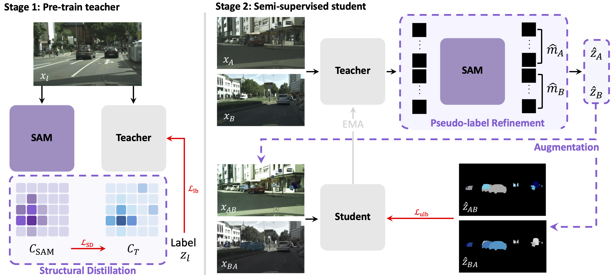
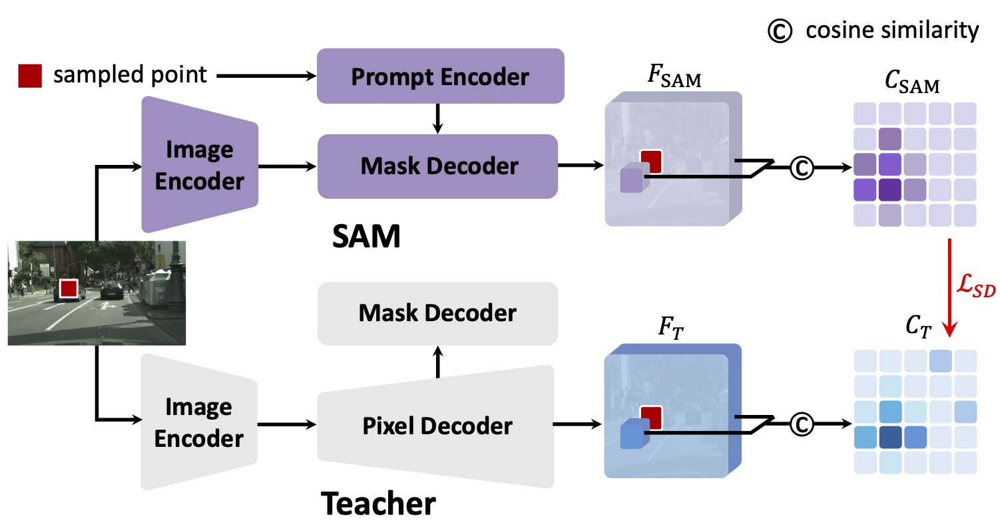
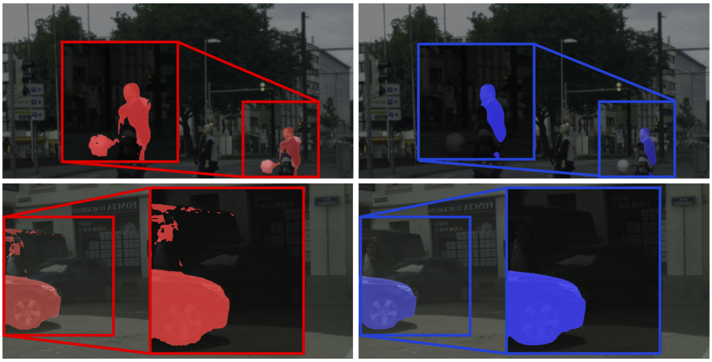

Overall Framework

S4M effectively leverages SAM knowledge through three key approaches. First, we improve the teacher network through structural distillation, which distills SAM's inherent spatial understanding. Then, as the student learns from unlabeled images, we apply pseudo-label refinement based on SAM's strong segmentation capability, and further enhance training with instance-aware augmentation, ARP, which leverages the improved pseudo-labels.

Structural Distillation

Pseudo-label Refinement

Augmentation with Refined Pseudo-label